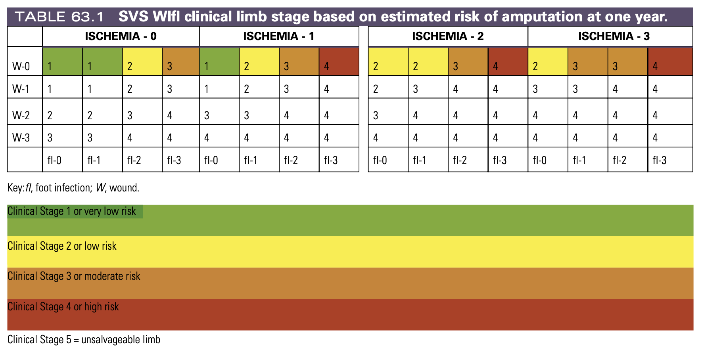
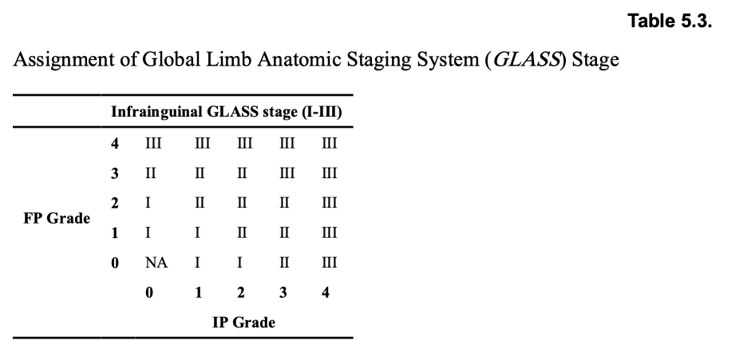

周邊動脈阻塞性疾病(Peripheral artery occlusion disease, PAOD)
07 April 2025
11:59


(Reference：Table 5.3, Global Vascular Guidelines on the Management of Chronic Limb-Threatening Ischemia. Eur J Vasc Endovasc Surg. 2019 Jul)
|
ABI 值 |
表示 |
|
> 1.4 |
內膜鈣化性硬化（Medial calcific sclerosis），導致血管無法收縮 |
|
1.0–1.4 |
Normal |
|
0.91–0.99 |
Borderline |
|
≤ 0.9 |
Abnormal （PAD confirmed） |
|
類型 |
血管內重建（Endovascular） |
手術血管重建（Surgical） |
|
手術 |
|
|
|
適用症 |
|
|
使用 OneNote 建立。